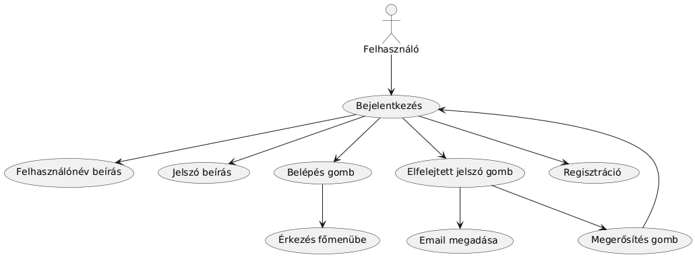
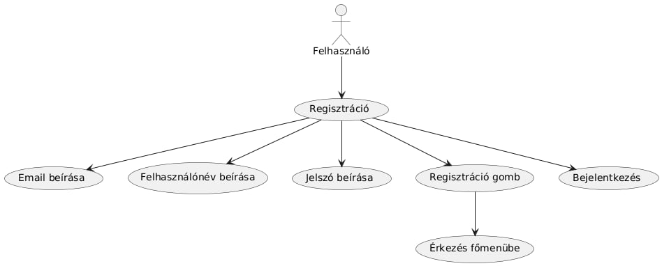
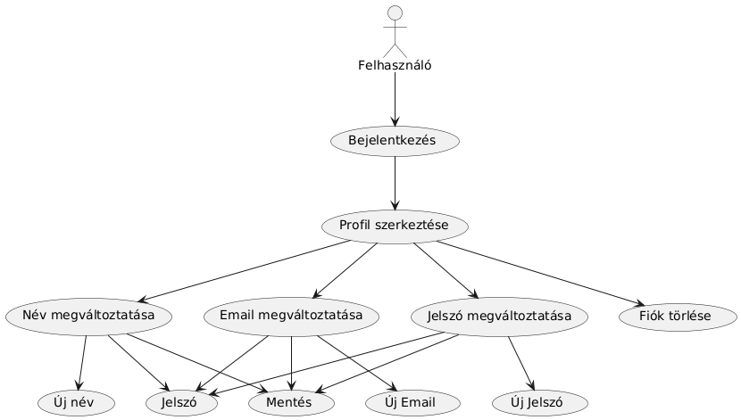
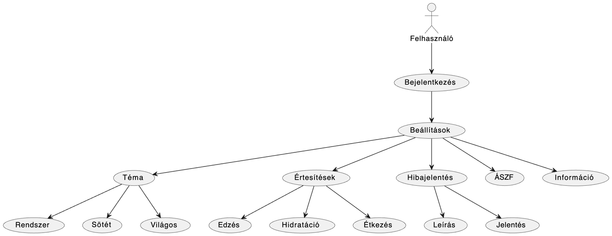
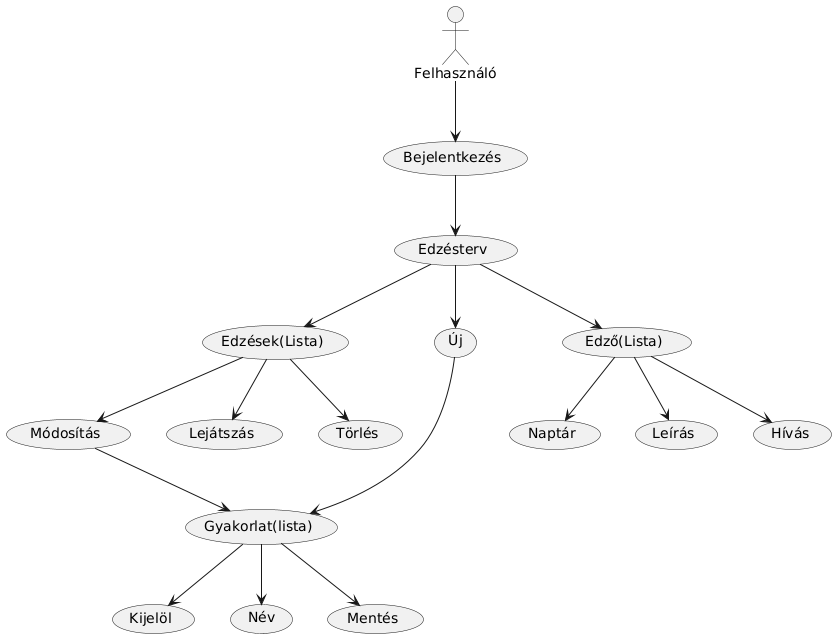
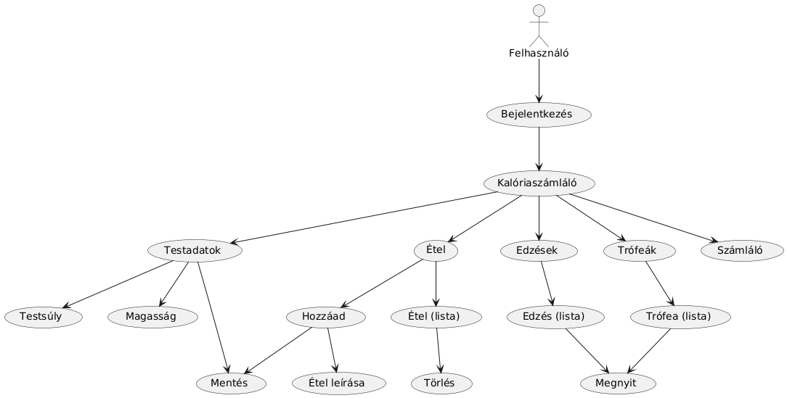
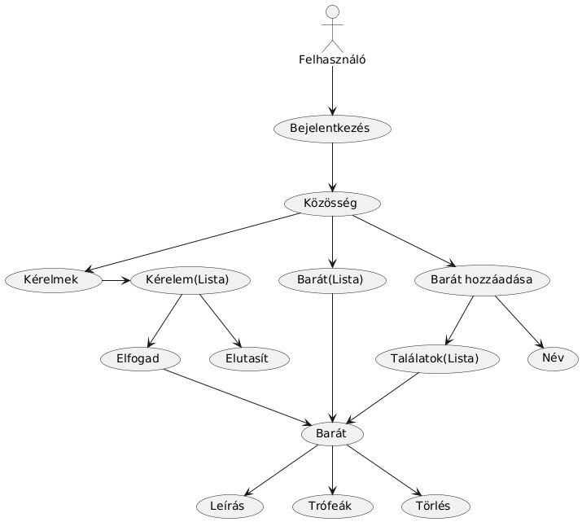
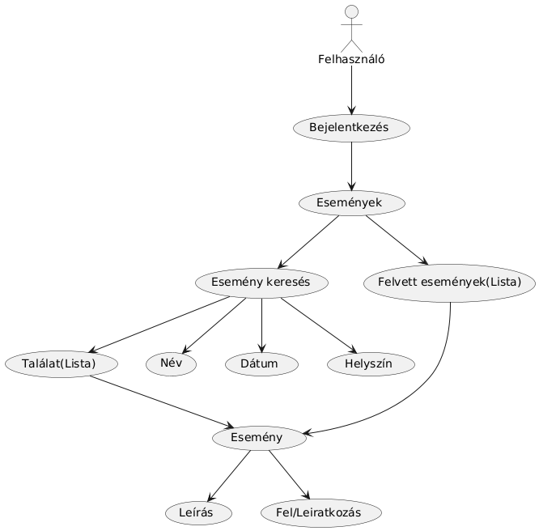

Csoport neve: Hátrányos helyzetűek
Feladat címe: H3
PROJEKT TERV
Gyakorlatvezető:
Dr. Mileff Péter
Csoport tagok:
|
Váradi Bence Lénárd |
FJYXPC |
Csapatvezető, fullstack
fejlesztő |
|
|
Szonda Martin |
CDEDOT |
Adatbázis, tesztelés |
|
|
Bodnár Milán |
CA7KMM |
UI/UX designer |
|
|
Marinov Márk |
BDK6P9 |
Backend fejlesztő |
|
|
Vaszil Valentin |
XGBT95 |
Dokumentáció, tesztelés |
2024.11.14.
Ez a dokumentáció a FitTrack szoftver részletes műszaki leírását tartalmazza, amely átfogó tájékoztatást nyújt a rendszer funkcióiról, felépítéséről és működéséről. A dokumentáció célja, hogy átlátható és hasznos útmutatót biztosítson a fejlesztők, rendszergazdák, karbantartók és felhasználók számára a szoftver hatékony használatához, valamint bemutassa a FitTrack fejlesztési és működési alapelveit.
A dokumentáció fejezetei lépésről lépésre tárgyalják a FitTrack különböző aspektusait: az Áttekintés résztől kezdve a Rendszer funkciói és az elsődleges követelmények bemutatásán át, egészen a Használhatóságra, Megbízhatóságra és Teljesítményre vonatkozó követelményekig. A szoftverrel kapcsolatos támogatási lehetőségeket, a tervezési korlátozásokat, valamint az Online dokumentáció és Help rendszer működését is részletesen tárgyaljuk.
A további fejezetek a FitTrack által felhasznált kész komponenseket és interfészeket ismertetik, beleértve a Felhasználói interfészeket, a Hardver interfészeket, a Szoftver interfészeket és a Kommunikációs interfészeket. Ezek az információk segítik a rendszerek közötti zökkenőmentes integrációt és kompatibilitást.
A dokumentáció utolsó részében található a Szabványok fejezete, amely bemutatja a FitTrack fejlesztése és használata során alkalmazott kötelező és választható szabványokat. Ezek a szabványok biztosítják a szoftver interoperabilitását, adatbiztonságát és fenntarthatóságát.
A FitTrack dokumentációja minden szükséges technikai és funkcionális információt biztosít ahhoz, hogy a szoftver használata egyszerű, hatékony és problémamentes legyen. Ezzel az átfogó útmutatóval a FitTrack fejlesztése, karbantartása és továbbfejlesztése is gördülékenyebbé válik.
Általános leírás
A FitTrack alkalmazás célja, hogy egy átfogó, jól struktúrált, ugyanakkor felhasználóbarát eszközt
biztosítson a fitneszcélok eléréséhez és a fejlődés nyomon követéséhez. Az
alkalmazás a piaci igényekre reagálva kínál felhasználóknak különböző
funkciókat, amelyek elősegítik a hatékony edzéstervezést, a célok mérését és a
közösségi motivációt. A FitTrack versenyelőnyét az
intuitív kezelőfelület, az integrált statisztikai eszközök, valamint a
különféle edzéstípusok támogatása adja.
A termék környezete
A FitTrack a fitneszipar digitális szektorába
illeszkedik, és az egészségtudatos életmódot kereső felhasználókat célozza meg.
A környezet magában foglalja a kezdő és haladó szintű fitneszrajongókat,
személyi edzőket, valamint edzőtermeket, amelyek széleskörű fitnesz
szolgáltatást kívánnak nyújtani ügyfeleiknek. Az alkalmazás a mobil
fitneszalkalmazások piacán helyezkedik el, de egyedülállóan kombinálja a
közösségi funkciókat, az okoseszköz-integrációt és a részletes adatkövetést.
Legfontosabb funkciók
A legfontosabb funkciók közé tartozik az egyéni edzéstervezés, a részletes
statisztikai adatgyűjtés, az eredmények megosztása és a közösségi motivációs
eszközök. Az alkalmazás célja, hogy a felhasználók könnyedén nyomon követhessék
fejlődésüket és motiváltak maradjanak. Ezen kívül az alkalmazás lehetőséget
biztosít edzők számára is, hogy ügyfeleik számára személyre szabott
edzésterveket készítsenek és nyomon kövessék azok fejlődését.
Felhasználók jellemzői
A FitTrack széles felhasználói bázissal rendelkezik,
beleértve kezdőket, haladókat, valamint személyi edzőket és edzőtermeket. Mivel
a felhasználói igények változatosak, az alkalmazás különböző szinteken kínál
segítséget: útmutatókat kezdők számára, részletes statisztikát a haladó
felhasználóknak, valamint edzői eszközöket, hogy a személyi edzők hatékonyan
nyomon követhessék ügyfeleik fejlődését.
Korlátozások, feltételezések és függőségek
A FitTrack működéséhez feltételezzük, hogy a
felhasználók rendelkeznek olyan eszközökkel, mint okostelefonok és okosórák,
illetve stabil internetkapcsolattal. Függőséget jelent a szerverkapacitás,
hiszen a felhasználók növekvő száma megterheli a háttérrendszereket, így ezek
folyamatos skálázását és fejlesztését meg kell oldani. Korlátozást jelenthet az
adatvédelmi szabályok szigorú betartása is, hiszen az alkalmazás személyes és
egészségügyi adatokat kezel.
Követelmények csoportosításának szempontjai
A követelményeket logikai csoportokba rendezzük, például: felhasználói élmény,
teljesítmény, adatbiztonság, skálázhatóság és interfészek. Ez megkönnyíti a
különböző funkciók követelményalapú fejlesztését, tesztelését és
karbantartását. Az egyes követelménycsoportok segítenek abban, hogy a projekt
minden szakaszában a fejlesztési prioritásokat könnyen lehessen azonosítani és
értékelni.
A FitTract alkalmazás célja, hogy átfogó eszközként szolgáljon mindazok számára, akik nyomon szeretnék követni edzési és egészségmegőrzési céljaikat. A felhasználók számára alapvető elvárás, hogy az alkalmazás egyszerűen használható legyen, ugyanakkor széleskörű funkcionalitást kínáljon a személyre szabott fitnesztervezéshez és egészségügyi adatok követéséhez. Az alábbiakban bemutatjuk a legfontosabb funkciókat, amelyek egy ilyen fitnesz- és egészségkövető alkalmazás alapját képezhetik. Ezek a funkciók azoknak a leggyakoribb felhasználási eseteknek az alapját képezik, amelyeket a felhasználók várhatóan elvárnak a FitTract alkalmazástól.
Edzéstervezés és naplózás: A felhasználók különböző edzésprogramokat szeretnének létrehozni és személyre szabni, hogy megfeleljenek egyéni céljaiknak, legyen szó erőnléti, kardio vagy rugalmassági edzésről. Az edzések automatikus naplózása és korábbi edzésnaplók visszakereshetősége is alapvető elvárás.
Célkitűzés és fejlődés nyomon követése A felhasználók célokat szeretnének kitűzni, például bizonyos kalóriaégetés, napi lépésszám vagy heti edzésidő tekintetében. Az alkalmazásnak támogatnia kell az elért eredmények követését és a felhasználók fejlődésének grafikus ábrázolását is.
Egészségügyi és aktivitási adatok monitorozása: Az alkalmazásnak lehetőséget kell nyújtania a felhasználók számára, hogy nyomon követhessék alapvető biometrikus és aktivitási adataikat, mint például a pulzusszám, lépésszám, kalóriaégetés és alvási idő. Az adatok integrációja külső eszközökkel (pl. okosórák, aktivitásmérők) szintén fontos.
Statisztikai elemzések és jelentések: A felhasználók számára elengedhetetlen, hogy részletes elemzéseket és trendeket lássanak az adataik alapján. Az alkalmazásnak különböző statisztikai mutatókat kell biztosítania, amelyek segítik a felhasználókat, hogy átlássák edzési és egészségügyi fejlődésüket.
Közösségi funkciók: Az alkalmazás lehetőséget kell biztosítson a felhasználóknak, hogy kihívásokban vegyenek részt, összehasonlítsák teljesítményüket barátaikkal, illetve megoszthassák eredményeiket és motivációt meríthessenek mások sikereiből. A közösségi interakciók elősegítik az alkalmazás használatának élvezetét és fenntarthatóságát.
Értesítések és emlékeztetők: A felhasználók elvárják, hogy az alkalmazás értesítéseket és emlékeztetőket küldjön az edzésidőpontokról, kitűzött célok közelgő eléréséről vagy az aktivitási szint fenntartásának szükségességéről. Ez a funkció segít abban, hogy a felhasználók motiváltak maradjanak.
Testreszabhatóság és felhasználói preferenciák beállítása: Az alkalmazás lehetőséget kell nyújtson a felhasználóknak, hogy személyre szabják a felületet és az értesítéseket, valamint kiválasszák az őket leginkább érdeklő célokat és metrikákat.
Ezek a funkciók összességében biztosítják, hogy a FitTract alkalmazás kielégítse a felhasználók alapvető elvárásait és támogassa őket a fitneszcéljaik elérésében. Az alábbi use case diagram bemutatja, hogyan használhatják a felhasználók az alkalmazást különböző célokra, az edzéstervezéstől kezdve a közösségi interakciókig.
Hogy pontosabbak megállapítsuk, hogy milyen lehetőségei is vannak a felhasználóknak a következő use case diagramok a FitTrack alkalmazás főbb funkcióit és a felhasználói szerepköröket mutatja be, ideértve a felhasználót (akinek célja saját edzéseinek és egészségügyi adatok nyomon követése), valamint egy adminisztrátort (aki az alkalmazás tartalmát és az adatokat kezeli). A diagram bemutatja, hogyan lépnek interakcióba a felhasználók az egyes funkciókkal, mint például a célkitűzések beállítása, edzéstervek megtekintése és személyre szabása, valamint az elért eredmények elemzése.
A diagramm terjengőssége miatt tagolva lesz bemutatva. Ez itt az alapváza az alkalmazásba a későbbiekben minden pont ki lesz bontva.
Felhasználói tevékenységek és funkciók - Use Case diagram magyarázata
Ez a FitTrack alkalmazás tevékenységeit és funkcióit bemutató diagram, amely szemlélteti, hogyan léphetnek interakcióba a felhasználók az alkalmazás különböző részeivel. A diagramon szereplő felhasználó különböző műveleteket hajthat végre, mint például regisztráció, bejelentkezés, edzéstervek létrehozása és módosítása, valamint közösségi funkciók használata.
Főbb funkciók:
Regisztráció és bejelentkezés: A felhasználó létrehozhat egy fiókot az alkalmazásban, majd bejelentkezhet. A bejelentkezést követően hozzáférhet az összes funkcióhoz, beleértve az edzéstervek kezelését, a statisztikák megtekintését és a közösségi kihívásokban való részvételt.
Profil szerkesztése: A bejelentkezett felhasználó módosíthatja személyes adatait. Itt lehetősége van a nevét megváltoztatni, profilképet módosítani, jelszót frissíteni vagy akár a fiókot törölni, ha erre van szükség.
Beállítások kezelése: Az alkalmazás beállításai lehetőséget adnak a felhasználónak arra, hogy testre szabja az élményt. Például megváltoztathatja az alkalmazás megjelenését, mint például a témát, vagy a hangbeállításokat, ezzel személyre szabva a felhasználói élményt.
Edzéstervezés és kezelés: Az alkalmazás lehetőséget biztosít a felhasználóknak, hogy létrehozzanak új edzésterveket, illetve kezeljék meglévő programjaikat. Lehetőség van edző felvételére is, aki segíthet az edzéstervek kialakításában, vagy meglévő edzésterveket módosíthat, és követheti az edzések előrehaladását.
Kalóriakövetés és célkitűzések: Az alkalmazás segítségével a felhasználó naplózhatja a napi étkezéseket, testadatokat adhat meg, és elvégezheti az edzéstervekhez kapcsolódó tevékenységeket. Továbbá beállíthatja a fitneszcéljait, nyomon követheti, hogy hol tart azok elérésében, és eredményeit megoszthatja másokkal.
Közösségi interakciók: Az alkalmazás támogatja a közösségi funkciókat, ahol a felhasználók kihívásokban vehetnek részt, megoszthatják eredményeiket, és barátokat is hozzáadhatnak vagy eltávolíthatnak. Ezek a funkciók segítenek fenntartani a motivációt, és lehetőséget adnak arra, hogy a felhasználók egymással versenyezzenek vagy együttműködjenek.
Események kezelése: A felhasználók részt vehetnek különféle eseményeken, kereshetnek újakat, vagy akár felvehetnek saját eseményeket. Lehetőség van arra is, hogy az eseményekről lemondjanak, vagy új eseményeket adjanak hozzá a naptárukhoz.
Műveletek és funkciók részletezése:
Regisztráció és bejelentkezés: A felhasználó regisztrálhat egy új fiókot, majd bejelentkezhet az alkalmazásba. A bejelentkezés után hozzáférhet az összes elérhető funkcióhoz, mint például a profil módosítása, edzéstervek létrehozása és követése, valamint a közösségi kihívásokban való részvétel.

1.
Bejelentkezési folyamat:
§
Felhasználónév beírása: A felhasználó megadja a
felhasználónevét.
§
Jelszó beírása: A felhasználó megadja a
jelszavát.
§
Belépés gomb: A felhasználó a “Belépés” gombra
kattint, amely sikeres hitelesítés esetén átirányítja a főmenübe.
§
Elfelejtett jelszó: Ha a felhasználó
elfelejtette a jelszavát, választhatja az „Elfelejtett jelszó” gombot. Ezt
követően meg kell adnia az email címét, majd megerősítő gombra kattintania. Ezt
követően kap egy emailt a további teendőkről.
§
Regisztráció: Ha a felhasználó még nincs
regisztrálva, a „Regisztráció” gombra kattintva megkezdheti a regisztrációs
folyamatot. Ez azt jelenti, hogy át lesz irányítva a regisztrációs felületre.

2.
Regisztrációs folyamat:
§
Email beírása: A felhasználónak meg kell adnia
az email címét.
§
Felhasználónév beírása: A felhasználó létrehoz
egy egyedi felhasználónevet.
§
Jelszó beírása: A felhasználónak meg kell adnia
egy jelszót a fiók védelme érdekében.
§
Regisztráció gomb: Miután az összes szükséges
adatot megadta, a felhasználó a „Regisztráció” gomb segítségével véglegesítheti
a folyamatot. Sikeres regisztráció után a felhasználó át lesz irányítva a
főmenübe.
Profil szerkesztése: A bejelentkezést követően a felhasználó módosíthatja személyes adatait, például nevét vagy profilképét, továbbá frissítheti jelszavát, ha szükséges. Emellett lehetőség van a fiók törlésére is, ha a felhasználó úgy dönt, hogy már nem szeretné használni az alkalmazást.

Ez az oldal kiírja a felhasználó adatait és minden adat után meglesz a lehetőség, hogy megváltoztassa azt.
Név megváltoztatása: ezen az oldalon megkell adnia az új felh. nevet, ill. a jelszavát ahhoz, hogy módosítani tudja a felh. nevét. Végül a mentés gombbal véglegesíti azt.
Email megváltoztatása: ezen az oldalon megkell adnia az új email címét, ill. a jelszavát ahhoz, hogy módosítani tudja az email címét. Végül a mentés gombbal véglegesíti azt.
Jelszó megváltoztatása: ezen az oldalon megkell adnia az új jelszavát, ill. a jelszavát ahhoz, hogy módosítani tudja a jelszavát. Végül a mentés gombbal véglegesíti azt.
Fiók törlése: lehetőség van törölnie a fiókat. Ezen az oldalon csak meg kell erősíteni, hogy biztoson törölni akarja a fiókját.
Beállítások kezelése: A beállítások menüpontban a felhasználó testre szabhatja az alkalmazás megjelenését, mint például a téma kiválasztása, hogy az alkalmazás megjelenése jobban illeszkedjen az egyéni preferenciákhoz. Emellett lehetőség van a hangbeállítások módosítására, például értesítési hangok beállítására vagy azok kikapcsolására.
A felhasználó a következő képen fogja tudni használni ezt a funkciót:

Témabeállítás: ez egy lenyíló menü 3 lehetőséggel
· Eszköz alapértelmezett: követi az eszköz témáját
· Világos: az alkalmazás mindig világos
· Sötét: az alkalmazás mindig sötét
Értesítések: Személyre szabhatja a felhasználó milyen értesítéseket szeretne kapni az alkalmazástól. Ezek a lehetőségek checkbox-ként jelennek meg.
· Edzés: értesít edzés előtt 1 órával, ezt az edzés listádból tudja.
· Hidratáció: figyelmeztet, ha nem ittad meg az ideális folyadék mennyiséget.
· Étkezés: figyelmeztet, ha a bevitt ételeid alapján nem jön ki a napi kalóriaszám
Hibajelentés: lehetőséget ad hibák, bug-ok jelentésére. Egy egyszerű szövegmezőt tartalmaz, ahová a hiba leírást kell megadni, illetve egy jelentés gombot ezzel tudja elküldeni a hibát.
ÁSZF: Általános szerződési feltételek
Információ: verziószám, changelog
Edzéstervezés és kezelés: A felhasználó létrehozhat és testre szabhatja saját edzésterveit, amelyek illeszkednek az egyéni célokhoz. Az edzéstervek különböző gyakorlati elemeket tartalmazhatnak, amelyek közül a felhasználó választhat. Továbbá, ha szükséges, edzőket is felvehet, akik segítenek az edzések nyomon követésében és tanácsokkal látják el.
A felhasználó a következő képen fogja tudni használni ezt a funkciót:

Edzésterv: ez a kezdő oldal, itt listázza ki azokat az edzésterveket, amiket eddig létre hoztunk. Ezek grafikusan egységes box-okban jelenik meg. Ezekben egy leírás mellett lesz még 3 gomb: törlés, módosítás, lejátszás
¯
Az oldal tartalmaz továbbá egy „Új” gombot. Ha erre kattintunk átdob egy új oldalra, kilistázza a milyen edzés gyakorlatok érhetők el, a felhasználó ezeket tudja kijelölni és tudja berakni az edzéstervébe. Elnevezi az edzéstervet és menti. Ha a felhasználó az edzésterveinél a módosításra megy, akkor ugyanerre a felületre hozza és egyszerű kijelöléssel tudja módosítani mik tartozzanak bele az edzéstervébe.
¯
Az edzéstervek oldalon talál egy olyan gombot, hogy „Edző”. Ez átirányítja őt egy új felületre, ahol edzők listázva. Edzőknek van egy rövid leírása, illetve megnyitható náluk egy ráérési naptár, ahol láthatja a felhasználó, hogy mikor tudna igénybe venni az edző szolgáltatásait. A felületen csak konzultációt tudd kérni az edzőtől. Onnantól már kettőjükön múlik egy alkalom lebeszélése.
Kalóriakövetés és célok beállítása: A felhasználó nyomon követheti a napi kalóriabevitelét és az elégetett kalóriákat az edzések során. Lehetőség van testadatok megadására, például súly, magasság és egyéb mértékek nyilvántartására. Az alkalmazás célkitűzések beállítására is alkalmas, amelyek teljesítésével a felhasználó jutalmakat, például trófeákat kap, amelyeket megoszthat másokkal.

Testadatok:
· A
Testadatok szekcióban a felhasználó megadhatja az aktuális testsúlyát
és magasságát.
· Ehhez
külön-külön mezők lennének, ahol a felhasználó beírhatja az adatokat, majd a Mentés
gombra kattintva elmentheti azokat. Ezek az adatok később alapját képezhetik a
kalóriaszükséglet kiszámításának.
Étel:
· Az
Étel szekcióban a felhasználó naplózhatja az elfogyasztott ételeket.
· A
Hozzáad gombra kattintva egy űrlap nyílna meg, ahol az étel nevét és
kalóriatartalmát lehetne megadni, valamint további leírást (például adag vagy
étel típus).
· Az
Étel lista gombra kattintva a felhasználó megtekintheti a korábban
bevitt ételek listáját.
· Ha
törölni szeretne egy ételt a listából, az Étel lista mellett megjelenne
a Törlés opció is, amellyel eltávolíthatja a kiválasztott ételt.
Edzések:
· Az
Edzések szekció lehetővé teszi az elvégzett edzések rögzítését és
megtekintését.
· Az
Edzés lista gomb megnyomásával a felhasználó hozzáadhatja az edzéseit,
például a mozgás típusát, időtartamát, elégetett kalóriákat stb.
· Az
edzés lista így egy visszatekinthető naplóként is szolgál, segítve a
felhasználót a rendszeres testmozgás követésében.
Trófeák:
· A
Trófeák a felhasználó különböző elért eredményekért trófeákat kap.
· A
Trófea lista megnyitásával a felhasználó megtekintheti, hogy milyen
díjakat vagy trófeákat szerzett már meg. Ezek lehetnek kitűzött célok elérése,
bizonyos mennyiségű kalória elégetése, rendszeres edzés stb.
· A
Megnyit gombra kattintva egy konkrét trófea részletes leírása is
megjelenhetne.
Számláló:
· A
Számláló funkció az alkalmazás központi eleme lehet, amely összegzi a
napi vagy heti kalóriabevitelt és kalóriaégetést. Ezzel a felhasználó nyomon
követheti, hogy mennyi kalóriát fogyasztott és égetett el.
· Ezen
a felületen valós idejű adatok is megjelenhetnek, például a napi kalóriacéltól
való eltérés vagy az aktuális kalóriaegyensúly.
Közösségi funkciók és barátkezelés: A felhasználók hozzáadhatnak barátokat az alkalmazáson belül, és versenyezhetnek egymással különböző kihívásokban. Lehetőség van barátok eltávolítására is, ha már nem kívánnak kapcsolatban maradni velük az alkalmazáson keresztül. Ezen kívül a közösségi kihívások és az események közös célokat adnak a felhasználóknak, növelve a motivációt és a versenyszellemet.

1. Barátok kezelése:
o Lépések a használathoz:
§ Nyissa meg a „Közösség” menüpontot, és válassza a „Barátok kezelése” opciót.
§ Itt megtekintheti az összes barátját, akiket az alkalmazásban hozzáadott.
§ Barátokat hozzáadhat vagy eltávolíthat az alábbi lehetőségek szerint.
o Tippek:
§ Rendszeresen ellenőrizze barátlistáját, hogy fenntartsa a motiváló kapcsolatokat, és kezelje azokat, akikkel már nem szeretné tartani a kapcsolatot.
2. Kérelmeim:
o Lépések a használatához:
§ Menjen a „Kérelmek” menü pontra
§ Itt kilistázza a kérelmeket. Kiírja a felhasználó nevét. El lehet utasítani, amennyiben elfogadod átdob a barát kérő oldalára
3. Barát hozzáadása:
o Lépések a használathoz:
§ Válassza a „Barát hozzáadása” opciót.
§ Kereshet barátokat az alkalmazás adatbázisában a nevük alapján, vagy meghívhatja őket a közösségi médián vagy e-mailen keresztül.
§ Küldjön barátfelkérést, és várja meg, amíg a másik fél elfogadja a meghívást.
o Tippek:
§ Használja ki a barátokkal való kapcsolat lehetőségét, hogy versengjenek egymással, vagy támogassák egymást a fitneszcélok elérésében.
4. Barát eltávolítása:
o Lépések a használathoz:
§ Nyissa meg a „Barátok kezelése” részt.
§ Keresse meg azt a barátot, akit szeretne eltávolítani, majd kattintson az „Eltávolítás” gombra.
§ Erősítse meg, hogy törölni szeretné a barátját a listáról.
o Tippek:
§ Gondolja át, mielőtt töröl valakit, mivel az eltávolítás után nem lesz lehetőség közvetlen kapcsolatfelvételre az alkalmazásban.
Események kezelése: A felhasználók kereshetnek és részt vehetnek különböző eseményeken. Az alkalmazás lehetővé teszi, hogy saját eseményeket is hozzanak létre, amelyeket megoszthatnak másokkal, vagy új eseményeket adjanak hozzá a meglévő programjaikhoz. Ha a felhasználó már nem kíván részt venni egy eseményen, leiratkozhat róla az eseménykezelő felületen.

1. Esemény keresése:
o Lépések a használathoz:
§ Nyissa meg az alkalmazás „Események” menüpontját.
§ Kattintson az „Esemény keresése” opcióra.
§ Használja a szűrőket, például dátum, helyszín, vagy eseménytípus alapján, hogy megtalálja a számára legérdekesebb eseményt.
§ A szűrők alkalmazása után görgessen végig a találati listán, és válassza ki az Önt érdeklő eseményt.
o Tippek:
§ Ellenőrizze a részletes eseményinformációkat, például a helyszínt, időpontot és a részvétel feltételeit, hogy biztosan megfeleljen az igényeinek.
§ Ha egy esemény különösen vonzónak tűnik, érdemes időben jelentkezni, mivel a helyek korlátozottak lehetnek.
2. Esemény felvétele:
o Lépések a használathoz:
§ Miután megtalálta a kívánt eseményt, kattintson az „Esemény felvétele” gombra.
§ Az alkalmazás megkéri, hogy erősítse meg a részvételi szándékát. Erősítse meg a jelentkezést, és az esemény automatikusan hozzáadódik az események menüpont kezdő listájához mely jelzi. Ez a lista azokat az eseményeket tartalmazza, amin részt veszünk
§ Az eseményhez közeledve az alkalmazás emlékeztetőt küld, hogy ne feledkezzen meg róla.
o Tippek:
§ Ne felejtse el beállítani az emlékeztetőket, hogy időben felkészüljön az eseményre, és ne hagyja ki.
3. Esemény leadása:
o Lépések a használathoz:
§ Lépjen az „Események” menübe, és válassza ki azt az eseményt, amelyről le szeretne iratkozni.
§ Kattintson az „Esemény leadása” gombra, és erősítse meg a lemondást.
§ Az esemény törlődik a listából, és a szervező értesítést kap a lemondásról.
o Tippek:
§ Próbáljon meg időben lemondani az eseményekről, ha már nem tud részt venni, hogy másoknak is legyen esélyük jelentkezni.
A használhatóság a FitTrack alkalmazás egyik legfontosabb szempontja, mivel célja, hogy minden felhasználói szint számára könnyen használható és hozzáférhető legyen. A FitTrack felhasználói élményének középpontjában egy egyszerű, intuitív felület áll, amely gyors betanulást biztosít, ugyanakkor az alkalmazás mélyebb rétegei a haladó felhasználók számára is kielégítő funkciókat kínálnak. A cél az, hogy a felhasználók minél gyorsabban és hatékonyabban érjék el céljaikat, legyen szó edzéstervezésről, statisztikák megtekintéséről vagy közösségi kihívások kezeléséről.
Betanulási idő
A betanulási idő az alkalmazás használatának egyik kritikus eleme. Az új felhasználók számára a FitTrack felülete úgy lett kialakítva, hogy könnyen navigálható és átlátható legyen. A felhasználói felület elemei logikus sorrendben követik egymást, minimalizálva az új felhasználók esetleges frusztrációit, akik először találkoznak egy fitneszalkalmazással. Az egyszerű, letisztult dizájn nem igényel előzetes technikai tudást, így bármilyen szintű felhasználó könnyen elsajátíthatja a használatát.
Az alkalmazás első indításakor egy rövid, interaktív útmutató vezeti végig a felhasználót a legfontosabb funkciókon. Ez az útmutató bemutatja, hogyan lehet edzésterveket készíteni, hogyan rögzíthető egy edzés, és hogyan követhetők nyomon a statisztikai adatok. Ezen túlmenően az alkalmazásban beépített tippek és trükkök is segítik a felhasználókat a gyors betanulásban, így nem szükséges hosszú oktatási anyagokat tanulmányozni. Azoknak, akik gyorsan szeretnének kezdeni, az alkalmazás 1-2 óra alatt teljes mértékben megtanulható, azonban további mélyebb funkciók felfedezése a haladó felhasználók számára is tartogat új lehetőségeket.
A haladó felhasználók számára, akik részletesebb adatokat szeretnének elemezni, vagy összetettebb edzésterveket kívánnak létrehozni, a FitTrack további, fejlettebb funkciókat kínál. Az ilyen felhasználók számára is könnyű betanulni, mivel a felület logikusan van felépítve, és az egyes funkciók könnyen elérhetők. Az alkalmazás folyamatos fejlesztése és frissítése biztosítja, hogy mindig naprakész technológiát és funkciókat kínáljon a felhasználóknak.
Használati idő
A FitTrack használatának hatékonyságát a gyors navigáció és egyszerű használat biztosítja. Egy adott tevékenység, mint például egy új edzésterv összeállítása, egy gyakorlat rögzítése vagy a korábbi teljesítményadatok megtekintése mindössze 1-2 perc alatt végrehajtható. Ez jelentősen hozzájárul ahhoz, hogy a felhasználók ne töltsenek túl sok időt az alkalmazás kezeléseivel, hanem inkább a valódi céljaikra, az edzésekre koncentrálhassanak.
Az átlátható menürendszer, a gyors keresési funkciók, valamint a személyre szabott javaslatok mind-mind segítik a felhasználókat abban, hogy a leggyakrabban használt funkciókat gyorsan elérjék. Az edzéstervek rögzítése és követése egy egyszerű, néhány kattintásból álló folyamat, amely minimalizálja a felesleges lépéseket és a felhasználói interakciókat. Az alkalmazás által kínált „gyors cselekvés” funkció lehetőséget biztosít arra is, hogy a felhasználók egyetlen kattintással elérhessék a leggyakrabban használt funkciókat, például az edzés elkezdését, az előre rögzített edzéstervek megtekintését vagy az előző edzések statisztikáit.
A rendszer automatikusan javaslatokat tesz a felhasználók számára a gyakori tevékenységek gyors elérésére, például amikor egy új felhasználó gyakran végez futást, az alkalmazás automatikusan felkínálhatja a futás rögzítését a következő alkalommal. Ez a fajta gépi tanulási algoritmus jelentősen javítja a használhatóságot, mivel a felhasználók számára a legfontosabb tevékenységek automatikusan kiemelésre kerülnek, csökkentve a navigációval töltött időt.
Felhasználói támogatás
A felhasználói támogatás elérhetősége kulcsfontosságú a FitTrack alkalmazás hosszú távú sikeréhez. Az alkalmazás számos oktatási eszközt és támogatási lehetőséget kínál, hogy a felhasználók mindig megtalálják a választ kérdéseikre. Ezek közé tartoznak a beépített oktatóvideók, amelyek vizuálisan és lépésről lépésre mutatják be az egyes funkciók használatát. Az oktatóvideók elérhetők az alkalmazásban és az online felületen is, így a felhasználók bárhonnan hozzáférhetnek ezekhez.
Az online súgó egy részletes, szöveges dokumentáció, amely tartalmazza az alkalmazás összes funkcióját és azok használatát. A felhasználók keresési funkcióval könnyen megtalálhatják a szükséges információkat, például hogyan lehet edzéstervet létrehozni, hogyan működik a statisztikai elemző modul, vagy hogyan lehet egy közösségi kihívásban részt venni. Az online súgó rendszeresen frissül, ahogy az alkalmazás új funkciói megjelennek.
Az ügyfélszolgálat folyamatosan elérhető, akár emailben, akár élő chat-en keresztül. A felhasználók személyre szabott támogatást kaphatnak, például ha technikai problémákba ütköznek vagy egyedi kérdéseik vannak az alkalmazás használatával kapcsolatban. Az ügyfélszolgálat célja, hogy minden kérdésre gyors és hatékony választ adjon, minimalizálva az alkalmazás használatából eredő akadályokat.
Továbbá, a fejlesztők külön igény esetén személyre szabott tréningeket és oktatási anyagokat is kínálnak edzőtermek, személyi edzők vagy egyéb felhasználói csoportok számára. Ezek az oktatások lehetőséget nyújtanak arra, hogy a felhasználók mélyebb ismereteket szerezzenek az alkalmazás fejlett funkcióiról, és személyre szabott tanácsokat kapjanak az alkalmazás maximális kihasználására.
Felhasználói visszajelzés és folyamatos fejlesztés
A FitTrack különös figyelmet fordít a felhasználói visszajelzésekre, amelyek nagy szerepet játszanak az alkalmazás folyamatos fejlesztésében. Az alkalmazásban elérhető egy visszajelzési modul, amely lehetővé teszi a felhasználók számára, hogy közvetlenül a fejlesztői csapathoz juttassák el észrevételeiket, javaslataikat. Ezek a visszajelzések folyamatosan beépülnek az alkalmazás frissítéseibe, így biztosítva, hogy a felhasználói igények és elvárások mindenkor teljesüljenek. A rendszer rendszeresen frissítéseket is kínál, amelyek nemcsak új funkciókat hoznak, hanem a felhasználói élményt is tovább finomítják, így biztosítva a folyamatos fejlődést és a versenyképesség fenntartását a piacon.
A megbízhatóság alapvető követelmény minden modern alkalmazás számára, és különösen fontos a FitTrack esetében, amely felhasználók széles körének napi fitnesztevékenységeit és fejlődését követi nyomon. A felhasználók elvárják, hogy az alkalmazás bármikor, zökkenőmentesen működjön, és az összes rögzített adat pontos legyen. Ezért a FitTrack fejlesztése során a rendszer stabilitására, megbízhatóságára és adatbiztonságára különös figyelmet fordítunk.
A megbízhatóság nemcsak a folyamatos rendelkezésre állást és a gyors hibaelhárítást foglalja magában, hanem azt is, hogy az alkalmazás adatai mindig pontosak, és a felhasználók teljesítményét reálisan tükrözik. A felhasználók motivációja nagyban függ attól, hogy adataik megbízhatóan rögzítve legyenek, és a rendszer megfelelően reagáljon az elvégzett tevékenységeikre.
Rendelkezésre állás
A FitTrack rendszer rendelkezésre állása kritikus fontosságú a felhasználói elégedettség szempontjából. A cél az, hogy az alkalmazás elérhetősége minimum 99,5%, azaz az év nagy részében folyamatosan működjön. Ez magában foglalja a rendszer aktív üzemidejét, beleértve a csúcsidőszakokban történő felhasználást, mint például reggeli és esti órákban, amikor a felhasználók általában edzenek. Az üzemidő biztosítása érdekében folyamatos monitorozást végzünk, hogy időben felismerjük a lehetséges problémákat, és minimalizáljuk a leállásokat vagy lassulásokat.
A karbantartási idő minimalizálása érdekében előre tervezett karbantartásokat végeznek, amelyeket előre bejelentenek a felhasználók számára, így a használati zavarok mértéke a lehető legkisebbre csökkenthető. Ezek a karbantartási idők általában éjszaka, alacsony felhasználói terhelés mellett történnek, hogy ne zavarják a felhasználók napi rutintevékenységeit.
A rendszer terheléselosztó mechanizmusokat használ a felhasználói igények kezelésére, így biztosítva, hogy nagy forgalom esetén se tapasztaljanak lassulást vagy elérhetetlenséget a felhasználók. Az alkalmazás felhőalapú infrastruktúrán fut, amely biztosítja a skálázhatóságot és a magas rendelkezésre állást.
MTBF és MTTR
Az MTBF (Mean Time Between Failures), azaz a hibák közötti átlagos idő 6 hónapra van tervezve, ami azt jelenti, hogy a FitTrack-nak havonta legfeljebb egyszer szabad komolyabb hibát mutatnia. A megbízhatóság magas szintjét a fejlesztési és tesztelési folyamat során alkalmazott szigorú minőségbiztosítási eljárások biztosítják. Az alkalmazást folyamatosan frissítik és optimalizálják, hogy minimalizáljuk a hibák számát és azok gyakoriságát.
Az MTTR (Mean Time To Repair), vagyis a hibák javítására fordított idő átlagosan 1 óra, ami azt jelenti, hogy ha egy hiba bekövetkezik, a fejlesztői csapat célja, hogy azt egy órán belül elhárítsa. Ehhez a FitTrack egy erős hibakezelési és monitoring rendszerre támaszkodik, amely valós időben figyeli a rendszer működését. A hibajelzések automatikusan riasztják a rendszergazdákat, és a javítási folyamat azonnal megkezdődik. Az automatikus biztonsági mentések és a redundáns szerverek lehetővé teszik, hogy az alkalmazás a minimális leállások alatt is biztosítsa az adatok biztonságát és integritását.
Ezek az intézkedések azért fontosak, mert a felhasználók számítanak arra, hogy az alkalmazás folyamatosan elérhető, és nem veszítenek adatot vagy előrehaladást egy esetleges rendszerhiba miatt. A gyors javítások nemcsak a felhasználói elégedettséget növelik, hanem hozzájárulnak a felhasználói bázis fenntartásához és növekedéséhez is.
Adatpontosság
Az adatpontosság az egyik legfontosabb szempont a FitTrack megbízhatóságának biztosításában, mivel a felhasználók edzésük nyomon követéséhez, valamint fejlődésük méréséhez pontos adatokat várnak. Az alkalmazás pontosan rögzíti a különböző tevékenységeket, mint például a megtett távolság, az elvégzett gyakorlatok, az ismétlések száma, az elégetett kalóriák és egyéb teljesítménymutatók.
Az alkalmazás számos adatforrást használ, beleértve a beépített okostelefonos érzékelőket, GPS-t, valamint a különféle okoseszközök, például pulzusmérők és fitnesz karkötők által biztosított adatokat. A pontos adatrögzítés érdekében a FitTrack szinkronizálja az adatokat ezekkel az eszközökkel, és folyamatosan elemzi őket, hogy biztosítsa a felhasználói tevékenységek pontos mérését.
Az adatok pontossága kulcsfontosságú a felhasználók fejlődésének nyomon követésében. Az alkalmazás biztosítja, hogy az adatok mindig hitelesek és megbízhatóak legyenek, így a felhasználók könnyen összehasonlíthatják a múltbeli teljesítményüket és fejlődésüket. Például a felhasználók követhetik, hogyan javult az állóképességük az idő múlásával, vagy hogyan növekedett az erőnlétük. Az adatok folyamatos frissítése valós idejű elemzéseket és visszajelzéseket tesz lehetővé, amely segíti a felhasználókat céljaik elérésében.
Az adatok védelme és biztonságos tárolása is fontos tényező. A FitTrack szigorú adatbiztonsági protokollokat alkalmaz, amelyek biztosítják, hogy a felhasználók személyes és edzési adatai titkosított formában kerüljenek tárolásra, és csak a felhasználók által engedélyezett személyek férhessenek hozzájuk. Ezen kívül az alkalmazás rendszeres biztonsági mentéseket végez, hogy minimalizálja az adatvesztés kockázatát bármilyen rendszerhiba vagy külső támadás esetén.
Hibajelentés és helyreállítás
A FitTrack rendelkezik egy hibajelentési rendszerrrel, amely lehetővé teszi a felhasználók számára, hogy az esetleges problémákat azonnal jelezzék az ügyfélszolgálatnak. Ez a funkció közvetlenül az alkalmazás felületéről elérhető, és automatikusan összegyűjti a releváns rendszerinformációkat, hogy a fejlesztők gyorsabban diagnosztizálhassák és javíthassák a hibákat.
Amennyiben hiba történik, a rendszer automatikusan értesíti a felhasználókat a helyzetről, és a hibajavítás után értesítést küld a probléma megoldásáról is. Ez biztosítja, hogy a felhasználók mindig tisztában legyenek azzal, hogy az alkalmazás folyamatosan javításra kerül, és az esetleges hibák gyorsan elhárításra kerülnek.
Zárolási mechanizmusok
A FitTrack biztosítja, hogy ha egy adott funkció nem érhető el (például karbantartás vagy frissítés miatt), a felhasználók azonnali értesítést kapjanak. A rendszerben beépített zárolási mechanizmusok akadályozzák meg, hogy adatvesztés vagy hibás adatrögzítés történjen, amikor a rendszer frissítése vagy karbantartása zajlik. Ezek a mechanizmusok garantálják, hogy a felhasználók adatai mindig biztonságban legyenek, és hogy a rendszer visszaállítása után az adatok pontosan ott folytatódjanak, ahol az alkalmazás megszakadt.
A FitTrack megbízhatósági követelményei tehát arra összpontosítanak, hogy a rendszer folyamatosan működjön, pontos adatokat rögzítsen és az esetleges hibákat gyorsan javítsa. A felhasználók számára ez azt jelenti, hogy bármikor elérhetik az alkalmazást, és biztosak lehetnek abban, hogy az adataik mindig biztonságban vannak és pontosak.
A teljesítmény kiemelten fontos szempont a FitTrack alkalmazás esetében, mivel az alkalmazás fő célja a gyors és megbízható működés biztosítása a felhasználók számára. A felhasználói élmény szempontjából elengedhetetlen, hogy az alkalmazás zökkenőmentesen működjön, függetlenül attól, hogy a felhasználók milyen eszközön vagy milyen hálózati környezetben használják azt. A teljesítmény nemcsak a válaszidőt, hanem az áteresztőképességet, a kapacitást és a rendszer által kezelt adatmennyiséget is magában foglalja, hogy a felhasználók gyors és hatékony interakciókat hajthassanak végre.
A React Native és a Firebase kombinációja az elmúlt években rendkívül népszerű választássá vált azok számára, akik gyorsan és hatékonyan szeretnének mobilalkalmazásokat fejleszteni. Mindkét technológia külön-külön is jelentős előnyökkel bír, de együtt használva különösen erős és hatékony eszközkészletet kínálnak, amely lehetővé teszi a fejlesztők számára, hogy gyorsan, skálázható módon és költséghatékonyan hozzanak létre alkalmazásokat. Ebben a fogalmazásban részletesen kifejtem, hogy miért teljesítenek jól együtt a React Native és a Firebase, illetve milyen konkrét előnyöket biztosítanak egy mobilalkalmazás fejlesztési folyamatában.
React Native és Firebase - Rövid
áttekintés
A React Native egy nyílt forráskódú mobil alkalmazásfejlesztési keretrendszer, amelyet a Facebook fejlesztett ki, és amely lehetővé teszi, hogy a fejlesztők JavaScript és React segítségével építsenek natív mobilalkalmazásokat iOS és Android platformokra. A React Native lényege, hogy egyszerre kínál gyors fejlesztési folyamatot és natív felhasználói élményt, hiszen a felhasználói felület végül natív komponensekké fordul, ezáltal az alkalmazás közel natív teljesítményt ér el.
A Firebase, amelyet a Google üzemeltet, egy felhőalapú szolgáltatáskészlet, amely minden szükséges háttérrendszert biztosít a modern mobilalkalmazásokhoz. Ide tartoznak az adatbázis-szolgáltatások (Firestore és Realtime Database), az authentikáció, a fájlkezelés, a push értesítések, a statisztikai elemzések és még sok más. A Firebase skálázható, és egyszerűen használható az integrációja, így tökéletes választás olyan alkalmazásokhoz, amelyek dinamikus adattárolást és valós idejű adatfrissítést igényelnek.
Teljesítmény és Fejlesztési Sebesség
A React Native és a Firebase együtt történő használatának egyik legnagyobb előnye, hogy drámaian megnöveli a fejlesztés sebességét. A React Native "írj egyszer, futtasd bárhol" megközelítése lehetővé teszi, hogy a fejlesztők egyszerre fejlesszenek mind iOS, mind Android platformra, ezzel megspórolva rengeteg időt és erőforrást. Az újrahasznosítható kód és komponensek jelentősen csökkentik a fejlesztési időt, miközben a natív komponensekkel való integráció megőrzi az alkalmazás teljesítményét és felhasználói élményét.
A Firebase skálázható és robusztus felhőalapú infrastruktúrája biztosítja, hogy az alkalmazások gyorsan működjenek, még nagy adatmennyiségek esetén is. A Firebase Realtime Database és Firestore adatbázisok valós idejű adatkapcsolatot biztosítanak, amely különösen fontos olyan alkalmazásoknál, ahol a felhasználói adatok azonnali frissítést igényelnek, például chat-alkalmazások vagy közösségi média platformok esetében. A React Native és Firebase együttes használatával a fejlesztők olyan alkalmazásokat építhetnek, amelyek gyorsan reagálnak a felhasználói műveletekre és zökkenőmentes adatkapcsolatot biztosítanak.
A Firebase mint teljes backend
platformként való alkalmazhatósága több tényezőnek köszönhető, és számos
eszközt biztosít, amelyek szinte minden backend feladatot lefednek. Íme, miért
használható a Firebase teljes backendként:
1. Valós idejű adatbázisok
2. Kiszolgáló nélküli (serverless)
funkcionalitás
3. Hitelesítés (Authentication)
4. Fájlok tárolása
5. Alkalmazás statisztikák és felhasználói elemzések
6. Felhasználói értesítések
7. Hosting
8. Egyszerű skálázás és biztonságos környezet
9. Egyszerű és gyors fejlesztési folyamat
Mikor ideális a Firebase teljes
backendre?
A Firebase teljes backendként való
használata különösen előnyös olyan projektekhez, amelyek:
Teljesítményoptimalizálás és Analitika
A Firebase Performance Monitoring lehetőséget biztosít arra, hogy a fejlesztők valós időben nyomon követhessék az alkalmazás teljesítményét, és azonosíthassák az esetleges lassulásokat vagy hibákat. Ez a funkció rendkívül fontos, mivel segít az alkalmazás optimalizálásában, különösen akkor, ha különböző eszközökön és operációs rendszereken kell futnia. A React Native komponensek hatékonysága párosulva a Firebase teljesítményfigyelésével és automatikus hibanaplózásával lehetővé teszi, hogy a fejlesztők gyorsan reagáljanak a teljesítménybeli problémákra és csökkentsék a felhasználói hibák számát.
A Firebase Analytics szintén könnyen integrálható React Native alkalmazásokba, amely lehetővé teszi a felhasználói viselkedés és interakciók mélyreható elemzését. Ez különösen hasznos, ha a fejlesztők a felhasználói élményt szeretnék optimalizálni, hiszen pontos adatokat kapnak arról, hogy hogyan használják a felhasználók az alkalmazást. Az adatelemzés segítségével a fejlesztők betekintést nyerhetnek a legnépszerűbb funkciókba és azokra a területekre is, ahol az alkalmazás esetleg fejlesztésre szorul.
Technikai összegzés
A React Native és Firebase együttes használata erős, megbízható és költséghatékony megoldást kínál a modern mobilalkalmazások fejlesztéséhez. A React Native gyors fejlesztési folyamata, újrahasznosítható komponensei és közel natív teljesítménye lehetővé teszi a gyors alkalmazásfejlesztést, míg a Firebase robusztus, valós idejű adatszinkronizációt és adatkezelést biztosít. Ez a kombináció tökéletes választás olyan projektek számára, ahol fontos a valós idejű felhasználói élmény, a gyors fejlesztési folyamat és a skálázhatóság. A Firebase által kínált háttérszolgáltatások - beleértve az autentikációt, az analitikát, és a teljesítménymérést - biztosítják, hogy az alkalmazás megbízhatóan működjön a növekvő felhasználói bázis igényeinek kielégítésére.
Válaszidő
A FitTrack esetében a leggyakrabban használt funkciók, mint például az edzéstervezés, a statisztikák megtekintése vagy a közösségi kihívások kezelése válaszideje 2 másodpercen belül kell, hogy legyen. Ez azt jelenti, hogy a felhasználói műveletek szinte azonnal végrehajtódnak, így a felhasználók nem tapasztalnak jelentős késleltetést az alkalmazás használata során.
A válaszidő optimalizálásához a FitTrack aszinkron adatkezelést alkalmaz, amely biztosítja, hogy a háttérben zajló folyamatok ne befolyásolják az alkalmazás sebességét. Például, amikor a felhasználók adatokat szinkronizálnak okosóráikkal vagy más fitnesz eszközeikkel, az adatok háttérben kerülnek feldolgozásra, így a felhasználói felület továbbra is gyorsan reagál az interakciókra. Az optimalizált adatbáziskezelés és a gyorsítótárazási technológiák biztosítják, hogy a felhasználók által lekérdezett adatok gyorsan megjelenjenek.
A felhasználói élmény fenntartása érdekében a FitTrack folyamatosan figyeli a válaszidőket, és rendszeresen végez teljesítményoptimalizálásokat. Ezen túlmenően a rendszer automatikusan beállítja a hálózati igényeket a felhasználók kapcsolati sebességének megfelelően, hogy lassabb hálózatok esetén is zökkenőmentesen működjön. Ez különösen fontos mobilhálózatok használatakor, ahol a hálózati sebesség változó lehet.
Áteresztőképesség
A FitTrack áteresztőképessége biztosítja, hogy az alkalmazás nagy terhelés alatt is megbízhatóan működjön. Az alkalmazás képes egyidejűleg 10000 aktív felhasználót kezelni, ami elegendő kapacitást biztosít a jelenlegi felhasználói bázis számára, de a növekedést is támogatja. A skálázhatóság érdekében a rendszer automatikusan képes a szükséges erőforrásokat dinamikusan bővíteni, például további szerverek és adatbázisok használatával a felhőalapú infrastruktúrán keresztül.
Az alkalmazás felhőalapú infrastruktúrája rugalmas, ami azt jelenti, hogy a FitTrack automatikusan bővítheti kapacitását a felhasználói terhelés függvényében. Ha például egy nagyobb közösségi kihívás vagy verseny zajlik, amely sok felhasználót vonz egyszerre, a rendszer képes dinamikusan növelni a rendelkezésre álló szerverkapacitást, hogy az alkalmazás továbbra is gyorsan és hibamentesen működjön. Az áteresztőképesség növelése során különös figyelmet fordítunk arra, hogy a rendszer magas rendelkezésre állással üzemeljen, minimalizálva a lassulások és leállások esélyét.
Az alkalmazás terheléselosztó technológiákat alkalmaz, amelyek segítenek optimalizálni az erőforrások használatát, és biztosítják, hogy a felhasználói kérések egyenletesen legyenek elosztva a szerverek között. Ezzel elkerülhető, hogy egyes szerverek túlterheltek legyenek, miközben mások kihasználatlanok maradnak.
Kapacitás
A FitTrack jelentős mennyiségű adatot kezel, amely magában foglalja a felhasználói profilokat, az edzésterv-adatokat, a statisztikai eredményeket és egyéb releváns információkat. A rendszer képes 10 TB adat kezelésére, ami bőséges tárhelyet biztosít a felhasználók által generált adatok hosszú távú tárolására. Az adatkapacitás növeléséhez szükség esetén további tárhelyek hozzáadása is egyszerűen megoldható, mivel a FitTrack egy rugalmas felhőalapú környezetben működik, amely skálázható a felhasználói igények szerint.
Az adatkezelés optimalizálására a FitTrack adattömörítési és gyorsítótárazási technológiákat használ, hogy minimalizálja a tárolási igényeket és maximalizálja az adatok hozzáférési sebességét. A háttérrendszerek folyamatos fejlesztése biztosítja, hogy a növekvő adatmennyiség problémamentesen kezelhető legyen, és a rendszer teljesítménye a felhasználói igények növekedésével is fennmaradjon.
Az adatkapacitás szempontjából a FitTrack nemcsak az aktuális adatokat tárolja, hanem archiválási rendszert is alkalmaz, amely lehetővé teszi a régebbi adatok biztonságos tárolását, ugyanakkor biztosítja, hogy azok könnyen elérhetők maradjanak a felhasználók számára. Az archivált adatok a háttérben kerülnek tárolásra, és csak szükség esetén aktiválódnak, ami tovább javítja a rendszer teljesítményét.
Erőforrás-kezelés és optimalizáció
A FitTrack nagy figyelmet fordít az erőforrás-kezelésre annak érdekében, hogy az alkalmazás gyorsan és hatékonyan működjön különböző eszközökön és hálózati körülmények között is. Az alkalmazás optimalizálva van alacsony sávszélességű kapcsolatokra és gyengébb hardverrel rendelkező készülékekre, hogy minden felhasználó számára biztosítva legyen a gyors és megbízható működés.
Az alkalmazás a felhasználói tevékenységek előrejelzésére is képes gépi tanulási algoritmusok segítségével, amelyek alapján az előre várható műveleteket gyorsítótárba helyezi, ezáltal csökkentve a válaszidőt. Például, ha egy felhasználó rendszeresen edz egy adott időpontban, a rendszer előre előkészíti az edzés rögzítéséhez szükséges funkciókat, hogy azok azonnal elérhetők legyenek, amikor a felhasználó belép az alkalmazásba.
Hálózati optimalizáció és terheléselosztás
A FitTrack alkalmazás képes kezelni a hálózati torlódásokat és szakadásokat, amelyek mobilhálózatok vagy lassú internetkapcsolat esetén fordulhatnak elő. Az alkalmazás adaptív adatátviteli protokollokat használ, hogy a lehető legtöbb információt továbbítsa anélkül, hogy a rendszer teljesítménye romlana.
Az adatforgalom optimalizálása érdekében a FitTrack adatcsomagokat használ, amelyek minimalizálják a hálózati terhelést és biztosítják, hogy a legfontosabb adatok elsőbbséget élvezzenek. Ezen kívül a rendszer intelligens terheléselosztókat alkalmaz, amelyek dinamikusan kezelik a felhasználók kéréseit, így minden kérés egyenletesen oszlik el a rendelkezésre álló szerverek között.
A támogatottság kritikus tényező a FitTrack alkalmazás hosszú távú sikeressége szempontjából. Ez a terület biztosítja, hogy az alkalmazás fejlesztése és karbantartása zökkenőmentesen történjen, így a rendszer képes alkalmazkodni a változó igényekhez, valamint hatékonyan reagáljon a felhasználói visszajelzésekre és technológiai kihívásokra. A jól definiált támogatási folyamatok lehetővé teszik a rendszer könnyű karbantartását, a hibák gyors elhárítását és a teljesítmény folyamatos optimalizálását. A FitTrack fejlesztése során külön figyelmet fordítunk a kódolási szabványokra, naplózási mechanizmusokra, valamint a fejlesztői és adminisztrációs segédprogramokra, amelyek hozzájárulnak a rendszer támogatottságához.
Kódolási szabványok
A FitTrack fejlesztése során az egységes kódolási szabványok alkalmazása biztosítja, hogy a rendszer könnyen karbantartható és bővíthető legyen. A kódolási szabványok olyan irányelvek és eljárások, amelyeket minden fejlesztő követ, hogy a kód átlátható, érthető és következetes maradjon a projekt minden fázisában. Ezek a szabványok magukban foglalják az egységes elnevezési konvenciókat, a kód dokumentálását és a kód struktúrájának szervezését.
Az egységes kódolási szabványok alkalmazása különösen fontos a nagy fejlesztői csapatok esetében, mivel ez csökkenti a hibalehetőségeket és leegyszerűsíti a kód felülvizsgálatát és karbantartását. A kódolási szabványok használatával biztosítjuk, hogy a fejlesztők könnyen átláthassák és módosíthassák mások munkáját anélkül, hogy időt kellene pazarolniuk a kód logikájának megértésére. Ez lehetővé teszi a gyorsabb fejlesztési folyamatot és a hatékonyabb hibaelhárítást.
A szabványok betartása különösen fontos a hibajavítás és a rendszerfrissítések során, mivel a következetes kódolás lehetővé teszi, hogy a fejlesztők könnyen megtalálják és orvosolják a hibákat anélkül, hogy ez jelentős fennakadásokat okozna. A kódolási szabványok részeként a FitTrack kódja jól dokumentált, ami segít a fejlesztőknek abban, hogy pontosan megértsék a kód működését, és megkönnyíti a későbbi frissítéseket és új funkciók bevezetését.
Naplók
A FitTrack automatikusan naplózza a felhasználói műveleteket, és ezek a naplók kritikus szerepet játszanak a rendszer megbízhatóságának és teljesítményének fenntartásában. A naplókban rögzített információk lehetővé teszik a fejlesztők és a rendszergazdák számára, hogy pontosan nyomon kövessék a felhasználói interakciókat, a hibajelenségeket és a rendszer működését. Ezek az adatok segítenek az alkalmazás teljesítményének folyamatos optimalizálásában, mivel a rendszer automatikusan figyeli és elemzi a felhasználói tevékenységeket.
A naplók részletes adatokat tartalmaznak minden fontos műveletről, beleértve a rendszerre vonatkozó hibákat, lassulásokat, valamint a felhasználói visszajelzéseket. Ezek az adatok segítenek a problémák gyors elhárításában, mivel lehetővé teszik a hibák pontos nyomon követését és az azonnali beavatkozást. Ha például egy adott funkció nem működik megfelelően, a naplókban tárolt információk alapján a rendszergazdák és fejlesztők gyorsan azonosíthatják a hiba okát, és elháríthatják azt.
Az automatikusan generált naplók továbbá segítenek a teljesítmény optimalizálásában is, mivel az adatokat folyamatosan elemezzük a rendszer hatékonyságának növelése érdekében. Például, ha egy bizonyos funkciót gyakran használnak, a naplók segítségével meghatározható, hogy szükség van-e a háttérfolyamatok javítására vagy a rendszer erőforrásainak átcsoportosítására, hogy a felhasználók számára még gördülékenyebb élményt nyújtsunk.
Ezeket a naplókat biztonságosan tárolják és kezelik, mivel érzékeny adatokat is tartalmazhatnak a felhasználói műveletekről. A naplókhoz való hozzáférés korlátozott, és csak a megfelelő jogosultsággal rendelkező személyek férhetnek hozzá, ezzel is biztosítva a felhasználók adatainak védelmét.
Segédalkalmazások
A FitTrack fejlesztése és működtetése során számos segédalkalmazás áll rendelkezésre, amelyek megkönnyítik a karbantartási feladatokat és a rendszer optimalizálását. Ezek a segédalkalmazások automatikusan elemzik a naplókat, segítenek a hibakeresésben és biztosítják a rendszer folyamatos működését.
Például, a statisztikai naplók kiértékelésére szolgáló eszközök lehetővé teszik a fejlesztők számára, hogy valós időben kövessék a rendszer teljesítményét, és azonnal észleljék azokat a pontokat, ahol javításokra lehet szükség. Ezek az eszközök segítenek a rendszer finomhangolásában is, különösen a magas terhelésű időszakokban, amikor nagy számú felhasználó használja az alkalmazást egyidejűleg.
Ezen kívül a mentési és visszaállítási eszközök biztosítják, hogy a rendszer és az adatok mindig védettek legyenek egy esetleges hiba vagy szerverleállás esetén. Ezek az eszközök rendszeresen biztonsági mentéseket készítenek az adatokról, és szükség esetén lehetővé teszik azok gyors visszaállítását. Így minimalizálható az adatvesztés kockázata, és biztosítjuk, hogy a felhasználók adatai mindig biztonságban legyenek.
Az archiválási rendszerek segítenek a hosszú távú adatok kezelésében, mivel a FitTrack nagy mennyiségű adatot tárol a felhasználói profilokról és edzéseredményekről. Az adatok archiválása lehetővé teszi a rendszer teljesítményének fenntartását anélkül, hogy a régebbi adatok eltűnnének vagy elérhetetlenek lennének. Ez különösen hasznos a felhasználók számára, akik hosszú távon szeretnék nyomon követni fejlődésüket és eredményeiket.
Hibajavítás és frissítések
A támogatottsági rendszer keretében a FitTrack rendszeres frissítéseket kap, amelyek javítják a teljesítményt, új funkciókat vezetnek be, és kijavítják az esetlegesen felmerülő hibákat. A frissítések egyszerűen, a háttérben történnek, hogy minimalizálják a felhasználói élmény megszakítását, és a felhasználók mindig a legfrissebb verziót használhassák.
A fejlesztői csapat számára rendelkezésre állnak a hibajavító eszközök, amelyek gyorsan és hatékonyan segítenek a rendszer hibáinak elhárításában. Ezek az eszközök integrálva vannak a naplózási rendszerrel, így azonnali hozzáférést biztosítanak a releváns információkhoz, amelyek alapján a hibák gyorsan orvosolhatók. A hibajavítások során a fejlesztők szorosan együttműködnek az ügyfélszolgálattal, hogy minden felhasználói problémát időben megoldjanak.
Dokumentáció és képzés
A támogatottság részeként a FitTrack részletes fejlesztői és adminisztrátori dokumentációt is biztosít. Ez a dokumentáció részletesen bemutatja a rendszer felépítését, működését és karbantartási eljárásait. A dokumentáció segítségével a fejlesztők gyorsan megtanulhatják, hogyan kezeljék a rendszert, és hogyan hajtsanak végre frissítéseket vagy javításokat.
A karbantartók számára külön tréninganyagok és képzési programok is elérhetők, amelyek segítik őket a rendszer hatékony kezelésében és fejlesztésében. Ezek a képzések biztosítják, hogy minden fejlesztő és rendszergazda naprakész tudással rendelkezzen a rendszer működéséről, és képes legyen hatékonyan elhárítani a felmerülő problémákat.
A FitTrack támogatottsági követelményei biztosítják, hogy a rendszer hosszú távon is stabilan működjön, könnyen karbantartható és fejleszthető legyen, valamint a felhasználók számára folyamatosan biztosítsa a megbízható szolgáltatásokat.
A tervezési korlátozások meghatározzák a FitTrack alkalmazás technológiai megvalósításának irányvonalait, és olyan kritériumokat jelölnek ki, amelyek figyelembevételével a fejlesztési folyamat során biztosítjuk a rendszer megfelelő működését, skálázhatóságát és bővíthetőségét. Ezek a korlátozások segítik a projekt technikai kereteinek megértését, és biztosítják, hogy a projekt az elvárt teljesítménnyel és hatékonysággal működjön a különböző felhasználói igények és környezetek kielégítése érdekében.
Architektúra
A FitTrack alkalmazás háromszintű architektúrát követ, amely biztosítja a rugalmas és skálázható működést. Ez a felépítés magában foglalja a frontend, backend, és adatbázis rétegeket, amelyek elkülönülnek egymástól, de szorosan együttműködnek a rendszer stabilitásának biztosítása érdekében.
A háromszintű architektúra lehetővé teszi, hogy az egyes rétegek egymástól függetlenül frissíthetők és skálázhatók legyenek. Ez különösen fontos a FitTrack számára, mivel a rendszer folyamatosan növekvő felhasználói bázissal rendelkezik, és biztosítani kell, hogy a backend képes legyen kezelni a nagy terhelést anélkül, hogy az a felhasználói élményt befolyásolná. Az ilyen architektúra alkalmazása elősegíti az alkalmazás könnyebb karbantartását, fejlesztését és a hibajavítások gyors végrehajtását.
Programozási nyelv
A FitTrack alkalmazás fejlesztése során JavaScript-et és React Native-et használunk a frontend felület létrehozására, valamint Firebase-t a backend és az adatkezelés megvalósítására. Ezek a technológiák gyors és dinamikus működést biztosítanak, valamint megkönnyítik a többplatformos fejlesztést és az integrációkat.
A JavaScript, React Native és Firebase technológiai kombinációja gyors fejlesztési ciklust tesz lehetővé, amely minimalizálja az új funkciók implementálásához szükséges időt, és elősegíti az alkalmazás stabil működését minden platformon.
Fejlesztési módszertan
A FitTrack fejlesztéséhez agilis fejlesztési módszertant alkalmazunk, amely lehetővé teszi a folyamatos visszajelzések beépítését és a gyors iterációkat a projekt során. Az agilis módszertan kulcsfontosságú a modern szoftverfejlesztésben, különösen egy olyan dinamikusan fejlődő alkalmazás esetében, mint a FitTrack.
Az agilis módszertan több szempontból is előnyös:
Ezek a tervezési korlátozások biztosítják, hogy a FitTrack alkalmazás technológiai megvalósítása hatékony, skálázható és a felhasználók igényeihez igazodó legyen. Az alkalmazott architektúra, a programozási nyelvek és a fejlesztési módszertan mind hozzájárulnak ahhoz, hogy az alkalmazás gyorsan reagáljon a változó környezetre, és zökkenőmentesen működjön a felhasználók számára.
A FitTrack alkalmazás fejlesztése során nagy hangsúlyt fektetnek a megfelelő online dokumentáció és támogatási rendszer kialakítására. Az ilyen jellegű háttérinformációk és útmutatók elérhetősége alapvető fontosságú a felhasználói élmény szempontjából, hiszen segítségükkel a felhasználók bármikor könnyen megtalálhatják a választ a felmerülő kérdéseikre. A dokumentáció célja, hogy ne csak az alapfunkciók megértését segítse, hanem az alkalmazás minden lehetőségét és beállítását érthetővé és egyszerűen használhatóvá tegye. Ennek köszönhetően a felhasználók hatékonyan tudják kihasználni a FitTrack nyújtotta lehetőségeket, beleértve az edzéstervezést, a statisztikai elemzést, a közösségi funkciók használatát, és az alkalmazás különböző testreszabási opcióit is.
A felhasználói kézikönyv részletes, lépésről lépésre bemutatott útmutatót kínál, amelynek célja, hogy megkönnyítse az új felhasználók számára az alkalmazás használatát. Ez a kézikönyv tartalmazza az alkalmazás telepítési folyamatának részleteit, beleértve az eszközspecifikus beállításokat is, amelyek segítenek az alkalmazás gördülékeny integrálásában a felhasználók eszközeire. A kézikönyv továbbá részletesen ismerteti a regisztrációs és bejelentkezési folyamatot, melyek alapvetőek az egyéni fiók létrehozásához és a személyre szabott funkciók eléréséhez. Az edzéstervező modul használatáról szóló fejezetek bemutatják, hogyan lehet testreszabott edzéstervet készíteni, illetve milyen lehetőségeket kínál az alkalmazás az egyes edzéscélok eléréséhez. Emellett az adatelemzési rész segíti a felhasználókat a statisztikai információk megértésében és felhasználásában, amelyek az edzések fejlődésének követésére szolgálnak. A közösségi funkciókat bemutató részek pedig azt magyarázzák el, hogyan vehetnek részt a felhasználók kihívásokban, hogyan oszthatják meg eredményeiket, és hogyan léphetnek kapcsolatba más felhasználókkal.
A technikai dokumentáció elsősorban azoknak készült, akik mélyebb műszaki betekintést szeretnének kapni az alkalmazás működésébe. Ezt a dokumentumot fejlesztők, rendszergazdák és üzemeltetők használhatják, akik szükségesnek érzik az alkalmazás alapjainak és struktúrájának megértését. A technikai dokumentáció részletes információkat nyújt az alkalmazás architektúrájáról, az adatbázis-felépítéséről, és a különböző kommunikációs interfészekről, amelyek biztosítják az alkalmazás és a külső rendszerek közötti adatcserét. Továbbá részletesen tárgyalja az integrált harmadik féltől származó komponensek használatát, amelyek növelik az alkalmazás funkcionalitását és rugalmasságát. Ez a dokumentáció nemcsak a hibaelhárításban segít, hanem a jövőbeli fejlesztések során is hasznos, hiszen lehetővé teszi, hogy új funkciók könnyen integrálhatók legyenek az alkalmazásba.
A frissítési útmutató egy lépésről lépésre bemutatott dokumentum, amely a felhasználók számára segítséget nyújt az alkalmazás legújabb verzióinak telepítésében. Az alkalmazás úgy lett kialakítva, hogy automatikus értesítést küld a felhasználóknak, amikor új frissítés érhető el, így mindig naprakészen tartható. A frissítési útmutató részletes információkat nyújt az új funkciókról, amelyek az alkalmazás frissítéseivel érkeznek, valamint a hibajavításokról, amelyek az alkalmazás stabilitásának és teljesítményének javítását célozzák. Ezen kívül bemutatja azokat a lépéseket, amelyek szükségesek a frissítési folyamat zökkenőmentes végrehajtásához, és tanácsokat ad az esetleges frissítési problémák elhárítására is.
A FitTrack alkalmazás támogatási rendszere egy 24/7-es ügyfélszolgálati platformot kínál, amely lehetőséget biztosít arra, hogy a felhasználók bármikor felvehessék a kapcsolatot a támogatói csapattal, ha kérdéseik vagy problémáik adódnak az alkalmazással kapcsolatban. Ez a szolgáltatás különösen hasznos lehet olyan esetekben, amikor gyors és hatékony segítségre van szükség. Emellett egy online fórum és tudásbázis is rendelkezésre áll, ahol a felhasználók kérdéseket tehetnek fel, válaszokat találhatnak, és megoszthatják tapasztalataikat másokkal. A fórumon a felhasználók tanulhatnak egymástól, megoszthatják egymással a megoldásokat és tippeket, amelyek segítenek a gyakori kihívások leküzdésében.
A FitTrack alkalmazás fejlesztése során néhány harmadik féltől származó elemet használunk, amelyek fokozzák a funkcionalitást és javítják a felhasználói élményt. Ezek a komponensek támogatják az alkalmazás skálázhatóságát, teljesítményét és adatbiztonságát, valamint gyorsabb fejlesztést tesznek lehetővé.
Komponens kiválasztási kritériumok
A harmadik féltől származó komponenseket a következő kritériumok alapján
választjuk ki: skálázhatóság, adatbiztonság, integrációs lehetőségek, költségek
és támogatás. Az alkalmazott komponensek mindegyike elismert fejlesztőktől
származik, így megfelel a magas adatvédelmi és biztonsági szabványoknak.
Integrált könyvtárak és API-k
Licenszek és szabályok
A harmadik fél által biztosított komponensek licenszei alapján minden szükséges
jogi szabályt betartunk, amelyek magukban foglalják a GDPR adatvédelmi
előírásait is. A komponensek beszerzésének költségeit is figyelembe vesszük a
költségvetés készítése során.
A FitTrack alkalmazás felhasználói felülete modern, intuitív és testre szabható, amely lehetővé teszi a felhasználók számára, hogy személyre szabott élményt élvezzenek. Az alkalmazás középpontjában a felhasználók igényei állnak, és a funkciók könnyen elérhetőek a felhasználó által meghatározott widgetek segítségével. Ezek a widgetek lehetővé teszik, hogy a felhasználók gyorsan hozzáférjenek a legfontosabb információkhoz és funkciókhoz, mint például az edzési statisztikák, aktivitási nyomon követés, kalóriaszámlálás, valamint az alvási ciklusok elemzése.
A testreszabható widgetek révén a felhasználók kiválaszthatják, hogy mely információkat szeretnék a főképernyőjükön megjeleníteni, így mindig könnyedén nyomon követhetik a fejlődésüket. Az egyszerű navigáció és a vizuálisan vonzó dizájn segít abban, hogy az alkalmazás használata élvezetes legyen, függetlenül attól, hogy a felhasználók kezdők vagy tapasztalt sportolók. A FitTrack tehát nemcsak egy edzésnapló, hanem egy komplex és rugalmas eszköz, amely támogatja a felhasználókat egészségi céljaik elérésében, miközben figyelembe veszi az egyéni preferenciákat és szükségleteket.
Az alkalmazás alapértelmezett kommunikációs interfésze az internetkapcsolat. Az adatok biztonságos átvitelt TLS titkosítással biztosítjuk. Az alkalmazás push értesítéseket küld a felhasználóknak a fontos mérföldkövekről, eredményekről és az új funkciókról. Ezen kívül az alkalmazás kommunikál a közösségi média platformokkal is, hogy a felhasználók könnyen megoszthassák eredményeiket.
A FitTrack fejlesztése és működtetése során különösen fontos, hogy az alkalmazás megfeleljen a különböző technikai, biztonsági és jogi szabványoknak. Ezek a szabványok biztosítják, hogy az alkalmazás adatbiztonsági szempontból megbízható, a felhasználói élmény szempontjából felhasználóbarát, és jogilag is megfeleljen a vonatkozó szabályozásoknak. Az alkalmazott szabványok két fő kategóriára oszthatók: kötelezően alkalmazandó szabványok, amelyeket jogi előírások írnak elő, és választás alapján alkalmazott szabványok, amelyek a fejlesztési és biztonsági minőség további javítását szolgálják.
További javasolt szabványok
A FitTrack alkalmazás fejlesztése és működtetése során alkalmazott szabványok biztosítják az alkalmazás magas színvonalú adatbiztonságát, a könnyű használhatóságot, valamint a jogi és technikai megfelelőséget. A kötelező és választható szabványok kombinációja lehetővé teszi, hogy az alkalmazás megbízható, biztonságos és széles körben hozzáférhető legyen a különböző felhasználói csoportok számára.
A megfelelő szabványok kiválasztása kulcsfontosságú a szoftverfejlesztés és az alkalmazásműködtetés során. A nem megfelelően kiválasztott szabványok nemcsak a fejlesztési folyamatot befolyásolják, hanem komoly következményekkel is járhatnak, amelyek hatással vannak a felhasználói élményre, az adatbiztonságra és a jogi megfelelőségre.
1. Felhasználói élmény romlása
A nem megfelelő szabványok, például a felhasználói felület ergonómiájának figyelmen kívül hagyása, súlyosan rontja a felhasználói élményt. Ha az alkalmazás nem intuitív vagy nehezen navigálható, a felhasználók frusztráltak lesznek, ami a használat elhagyásához vezethet. Az elégedetlenség hosszú távon csökkentheti a felhasználói bázist, és negatív hatással lehet az alkalmazás hírnevére.
2. Adatbiztonsági kockázatok
A biztonsági szabványok, mint például az OWASP irányelveinek figyelmen kívül hagyása, komoly adatvédelmi problémákhoz vezethet. Az érzékeny adatok, például egészségügyi információk nem megfelelő védelme könnyen adatszivárgáshoz vagy hackertámadásokhoz vezethet. Az ilyen incidensek következményei nemcsak pénzügyi veszteségeket, hanem a felhasználók bizalmának elvesztését is eredményezhetik.
3. Jogi következmények
A jogi előírások, mint a GDPR, betartásának elmulasztása súlyos jogi következményekkel járhat. Az adatok védelmére vonatkozó szabályok megszegése pénzbírságokhoz, valamint a cégek hírnevének csökkenéséhez vezethet. A jogi felelősség nemcsak anyagi szempontból hátrányos, hanem hosszú távon károsítja a márka megbízhatóságát is.
4. Hatékonysági problémák
A minőségirányítási szabványok, mint az ISO 9001 figyelmen kívül hagyása a fejlesztési folyamatok szervezetlenségéhez vezethet. A nem jól dokumentált vagy követhető folyamatok hibákhoz és késedelmekhez vezetnek, amelyek végső soron a projekt költségeinek növekedéséhez járulnak hozzá. A fejlesztők és a csapatok közötti kommunikáció hiánya tovább rontja a hatékonyságot.
Összegzés
A nem jól kiválasztott szabványok komoly következményekkel járhatnak a felhasználói élmény, az adatbiztonság, a jogi megfelelőség és a hatékonyság terén. A szabványok gondos megválasztása és következetes alkalmazása elengedhetetlen ahhoz, hogy az alkalmazás megbízható, biztonságos és felhasználóbarát legyen. A fejlesztőknek és a döntéshozóknak figyelembe kell venniük a releváns szabványokat, hogy elkerüljék a fenti problémákat, és biztosítsák a sikeres projektmegvalósítást.
On-line dokumentáció és Help rendszer
Kötelezően alkalmazandó szabványok
|
Név |
Neptun kód |
Kidolgozott pontok |
|
Váradi Bence Lénárd |
FJYXPC |
Áttekintés A rendszer funkciói Használhatóság |
|
Vaszil Valentin |
XGBT95 |
Teljesítmény Támogatottság Tervezési korlátozások |
|
Szonda Martin |
CDEDOT |
On-line dok... Felhasznált komponensek |
|
Bodnár Milán |
CA7KMM |
Interfészek |
|
Marinov Márk |
BDK6P9 |
Alkalmazott szabványok |
|
Dátum |
Verzió |
Leírás |
Szerző |
|
2024.10.28 |
1 |
Kezdeti verzió |
Marinov Márk |
|
2024.10.29 |
1.1 |
Formázás |
Váradi Bence L. |
|
2024.11.04 |
1.2 |
Edzéstervek kiegészítés |
Váradi Bence L. |
|
2024.11.13 |
1.3 |
Rendszer funkciók újra dolgozása, illetve további részletezése |
Váradi Bence L. Vaszil Valentin Marinov Márk Szonda Milán Bodnár Milán |
|
2024.11.14 |
1.4 |
Stripe és online fizetés Firebase bővítése |
Váradi Bence L. |